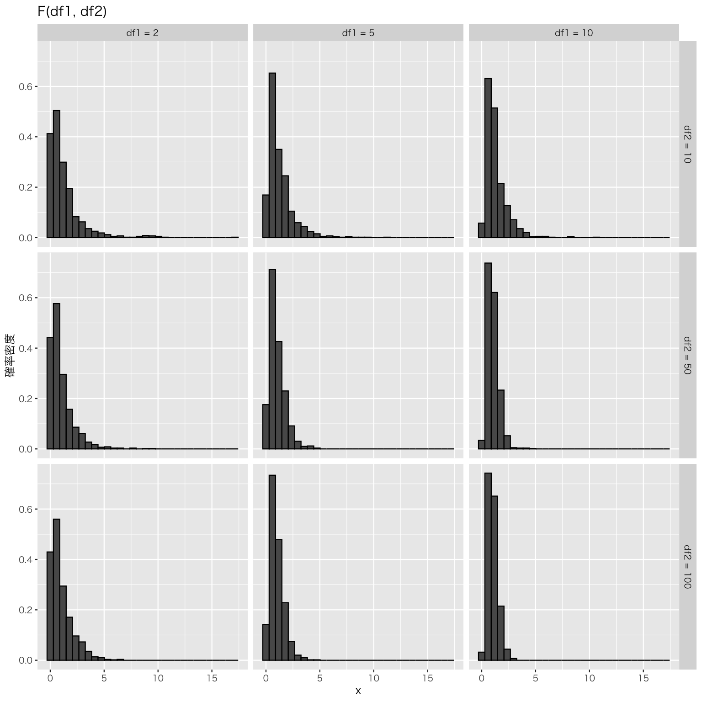
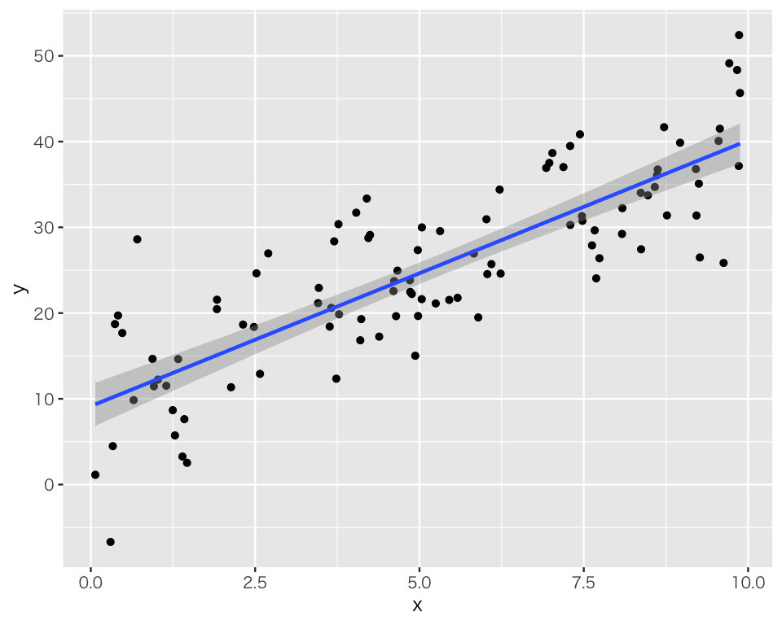
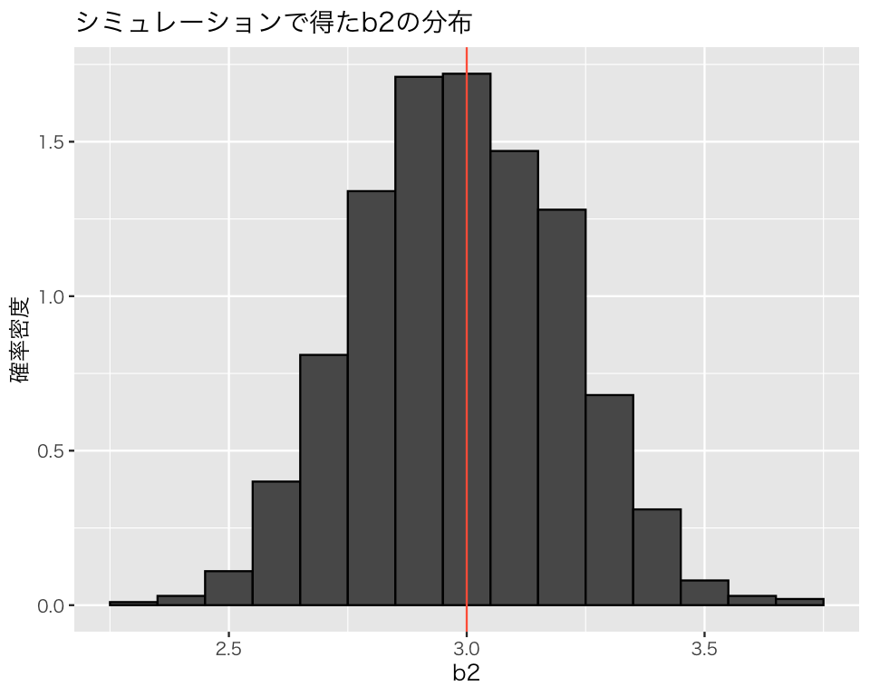
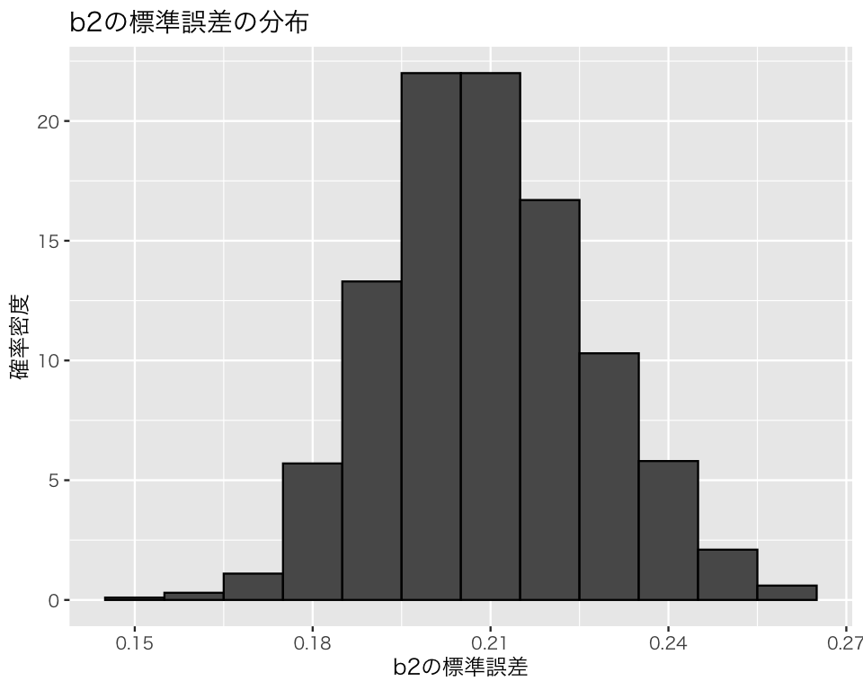
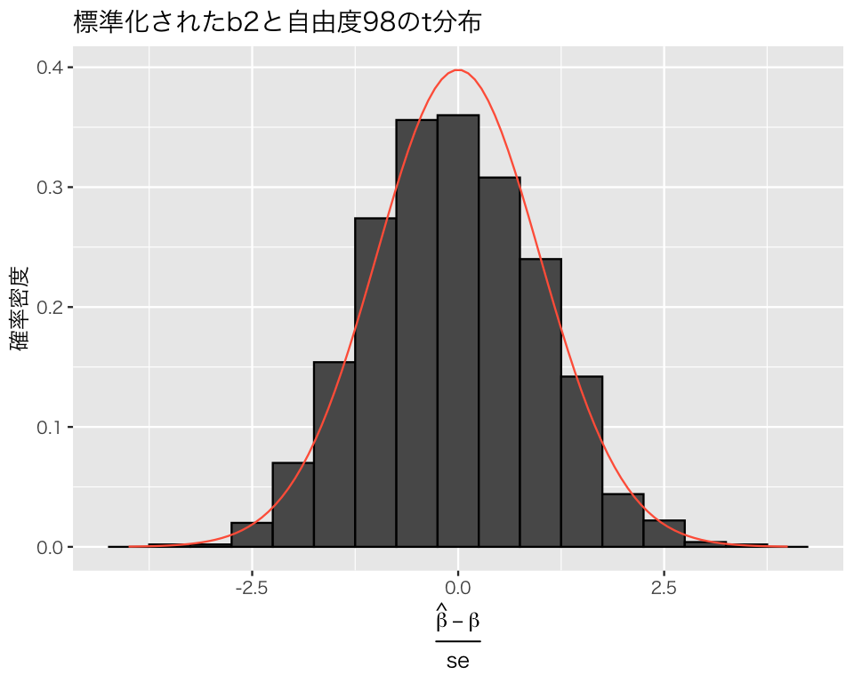
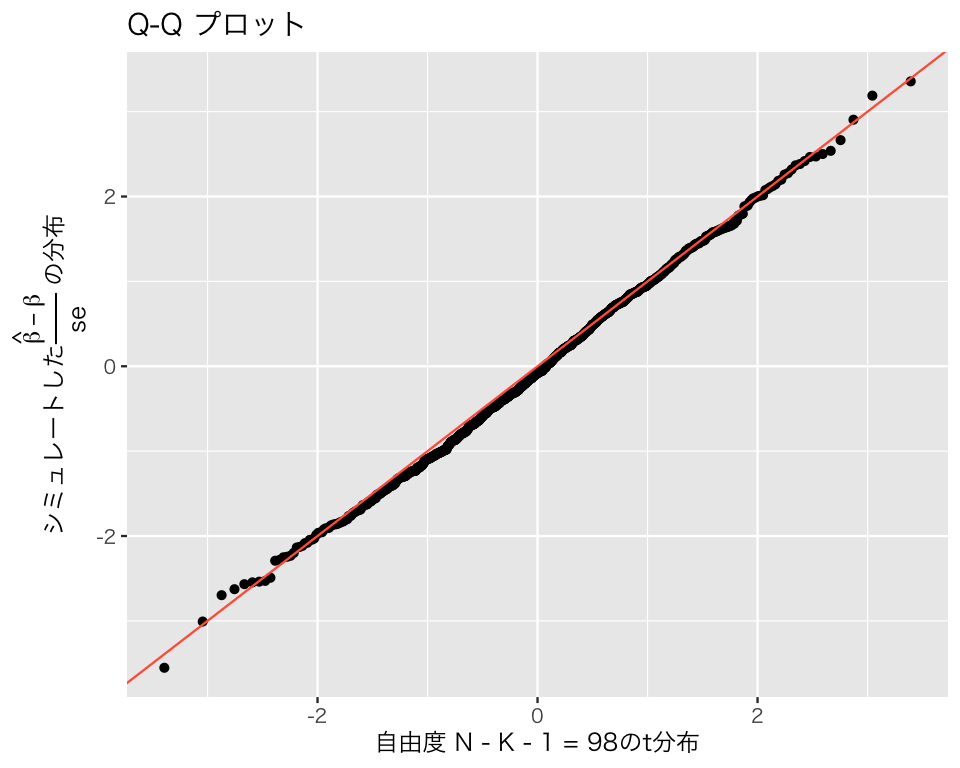
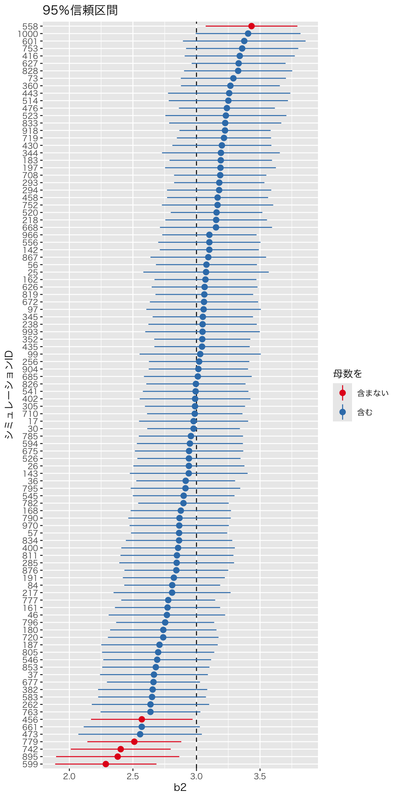

pacman::p_load(tidyverse,
broom)
if (.Platform$OS.type == "windows") {
if (require(fontregisterer)) {
my_font <- "Yu Gothic"
} else {
my_font <- "Japan1"
}
} else if (capabilities("aqua")) {
my_font <- "HiraginoSans-W3"
} else {
my_font <- "IPAexGothic"
}
theme_set(theme_gray(base_size = 9,
base_family = my_font))6 回帰分析による統計的検定と推論
今回の目標
- 回帰分析における統計的検定の方法を理解する
- 回帰分析の結果を推論に用いる方法を理解する
6.1 準備
まず、必要なパッケージを読み込む。
6.2 回帰分析における仮説検定
6.2.1 データの準備
説明のために『Rによる計量政治学』（浅野正彦, 矢内勇生. 2018）で使用されているデータ（hr-data.csv）を使う。
既にこのデータは入手済みだと思われるが、持っていない場合は上のリンクからダウンロードする。
データを読み込み、中身を確認する。
HR <- read_csv("data/hr-data.csv")Rows: 8803 Columns: 22
── Column specification ────────────────────────────────────────────────────────
Delimiter: ","
chr (7): ku, status, name, party, wl, smd, party_jpn
dbl (15): year, kun, party_code, previous, voteshare, age, nocand, rank, vot...
ℹ Use `spec()` to retrieve the full column specification for this data.
ℹ Specify the column types or set `show_col_types = FALSE` to quiet this message.glimpse(HR)Rows: 8,803
Columns: 22
$ year <dbl> 1996, 1996, 1996, 1996, 1996, 1996, 1996, 1996, 1996, 1996,…
$ ku <chr> "aichi", "aichi", "aichi", "aichi", "aichi", "aichi", "aich…
$ kun <dbl> 1, 1, 1, 1, 1, 1, 1, 2, 2, 2, 2, 2, 2, 2, 2, 3, 3, 3, 3, 3,…
$ status <chr> "現職", "元職", "現職", "新人", "新人", "新人", "新人", "現職", "元職", "新人",…
$ name <chr> "KAWAMURA, TAKASHI", "IMAEDA, NORIO", "SATO, TAISUKE", "IWA…
$ party <chr> "NFP", "LDP", "DPJ", "JCP", "others", "kokuminto", "indepen…
$ party_code <dbl> 8, 1, 3, 2, 100, 22, 99, 8, 1, 3, 2, 10, 100, 99, 22, 8, 1,…
$ previous <dbl> 2, 3, 2, 0, 0, 0, 0, 1, 1, 0, 0, 0, 0, 0, 0, 1, 3, 1, 0, 0,…
$ wl <chr> "当選", "落選", "落選", "落選", "落選", "落選", "落選", "当選", "落選", "復活当選…
$ voteshare <dbl> 40.0, 25.7, 20.1, 13.3, 0.4, 0.3, 0.2, 32.9, 26.4, 25.7, 12…
$ age <dbl> 47, 72, 53, 43, 51, 51, 45, 51, 71, 30, 31, 44, 61, 47, 43,…
$ nocand <dbl> 7, 7, 7, 7, 7, 7, 7, 8, 8, 8, 8, 8, 8, 8, 8, 7, 7, 7, 7, 7,…
$ rank <dbl> 1, 2, 3, 4, 5, 6, 7, 1, 2, 3, 4, 5, 6, 7, 8, 1, 2, 3, 4, 5,…
$ vote <dbl> 66876, 42969, 33503, 22209, 616, 566, 312, 56101, 44938, 43…
$ eligible <dbl> 346774, 346774, 346774, 346774, 346774, 346774, 346774, 338…
$ turnout <dbl> 49.2, 49.2, 49.2, 49.2, 49.2, 49.2, 49.2, 51.8, 51.8, 51.8,…
$ exp <dbl> 9828097, 9311555, 9231284, 2177203, NA, NA, NA, 12940178, 1…
$ expm <dbl> 9.828097, 9.311555, 9.231284, 2.177203, NA, NA, NA, 12.9401…
$ vs <dbl> 0.400, 0.257, 0.201, 0.133, 0.004, 0.003, 0.002, 0.329, 0.2…
$ exppv <dbl> 28.341505, 26.851941, 26.620462, 6.278449, NA, NA, NA, 38.2…
$ smd <chr> "当選", "落選", "落選", "落選", "落選", "落選", "落選", "当選", "落選", "落選",…
$ party_jpn <chr> "新進党", "自民党", "民主党", "共産党", "その他", "国民党", "無所属", "新進党", "自民…衆議院議員経験があることを表す変数（ダミー変数）と選挙費用を100万円単位で測定する変数を作る。新しい変数は dplyr::mutate() で作る。
HR <- HR |>
mutate(experience = as.numeric(status == "現職" | status == "元職"),
expm = exp / 10^6)1996年のデータだけ取り出す。
HR1996 <- HR |>
filter(year == 1996)6.2.2 単回帰の例（1）
1996年の選挙データを使って、「議員経験 (experience; \(X\)) が得票率 (voteshare; \(V\)) に影響する」という仮説を検証する。この仮説を、統計モデルとして以下のように表現する。 \[
V_i \sim \mbox{Normal}(\alpha + \beta X_i, \sigma)
\] このモデルは分析上の仮定 (assumption)であり、正しいとは限らないことに注意。
ここで検証する帰無仮説と対立仮説は、以下のとおりである。
- 帰無仮説：\(\beta = 0\)
- 対立仮説：\(\beta \neq 0\)
これを回帰分析で検証する。
まず、lm() 関数を使って回帰式を推定する。
fit1 <- lm(voteshare ~ experience,
data = HR1996)結果を確認する。まず。summary() を使って結果を表示してみよう。
summary(fit1)
Call:
lm(formula = voteshare ~ experience, data = HR1996)
Residuals:
Min 1Q Median 3Q Max
-38.334 -10.007 -2.207 8.593 67.393
Coefficients:
Estimate Std. Error t value Pr(>|t|)
(Intercept) 16.0070 0.4608 34.74 <2e-16
experience 22.8274 0.7891 28.93 <2e-16
Residual standard error: 13.28 on 1259 degrees of freedom
Multiple R-squared: 0.3993, Adjusted R-squared: 0.3988
F-statistic: 836.8 on 1 and 1259 DF, p-value: < 2.2e-16表示された結果のうち、Coefficients（係数） と書かれたブロックに注目する。Estimate（推定値）の列の、(Intercept) の行にある数値が\(\alpha\) の推定値\(a\)、experince の行にある数値が \(\beta\)の推定値\(b\)である。よって、この結果から、 \[
\hat{V}_i = 16.0 + 22.8 X_i
\] という予測が得られる。
しかし、回帰分析による統計的推定 で学習したとおり、推定値は標本を取り直すごとに変わる。したがって、ここで得られた値をそのまま信じるわけにはいかない。これらの値は、偶然得られただけで、真の値とはかけ離れているかもしれない。そこで、統計的検定を行う。検定には、\(t\)分布を利用する。
私たちが立てた帰無仮説は、\(\beta = 0\) である。推定量の標準誤差 (standard error) は分析結果の Std. Error の列に表示されている。よって、\(t\)値は、 \[
T
= \frac{b - \tilde{\beta}}{\mathrm{SE}(b)}
= \frac{b}{\mathrm{SE}(b)}
\approx \frac{22.8274}{0.7891}
\approx 28.93
\] である。 Rで\(b\) の値を取り出すには、
coef(fit1)[2]experience
22.82744 または、
summary(fit1)$coefficients[2, 1][1] 22.82744とする。また、SE(\(b\)) は、
summary(fit1)$coefficients[2, 2][1] 0.7891199なので、\(t\)値は、
with(summary(fit1), coefficients[2, 1] / coefficients[2, 2])[1] 28.92772である。この値が、上の表のt value の列に表示されている。この値を \(t\) 分布の臨界値と比較する。
有意水準を5%にして検定を実施しよう。利用する\(t\)分布の自由度は、\(N - K - 1\) である。\(N\) は、
(N1 <- nrow(HR1996))[1] 1261#N1 <- length(fit1$fitted.values) # 欠測値がある場合は、推定したモデルで確かめたほうが安全である。単回帰のなので \(K=1\) である。よって、求める臨界値は、
(c1 <- qt(p = 0.05 / 2, df = N1 - 1 - 1, lower.tail = FALSE))[1] 1.96185である。
\[ |T| = 28.93 > 1.96 = |c| \] となるので、有意水準5％で帰無仮説を棄却する。よって、\(\beta \neq 0\) である。
ここから、過去の議員経験は得票率に影響すると考える。\(b \approx 22.8\) なので、議員経験がない場合に比べ、議員経験がある場合には平均すると22.8ポイント得票が増えることが期待される。 22.8ポイントの差は実質的に大きな差であり、議員経験が実質的にも重要な意味をもっていると言えそうだ。（ただし、この結論は仮定した統計モデルに依存しているという点に注意する必要がある。）
続いて、\(\beta\)の95%信頼区間を求めよう。95％信頼区間の下限値は、
coef(fit1)[2] - c1 * summary(fit1)$coefficients[2, 2]experience
21.2793 上限値は、
coef(fit1)[2] + c1 * summary(fit1)$coefficients[2, 2]experience
24.37557 である。よって、求める95%信頼区間は、[21.28, 24.38] である。
この区間は、confint() によって求めることもできる。
confint(fit1, level = 0.95) 2.5 % 97.5 %
(Intercept) 15.10294 16.91102
experience 21.27930 24.37557また、summary() の代わりに、broom::tidy() を使うこともできる。
tidy(fit1, conf.int = TRUE, conf.level = 0.95)# A tibble: 2 × 7
term estimate std.error statistic p.value conf.low conf.high
<chr> <dbl> <dbl> <dbl> <dbl> <dbl> <dbl>
1 (Intercept) 16.0 0.461 34.7 5.66e-186 15.1 16.9
2 experience 22.8 0.789 28.9 1.68e-141 21.3 24.46.2.3 単回帰の例（2）
次に、「選挙費用 [単位：百万円] (expm; \(M\)) が得票率 (voteshare; \(V\)) に影響する」という仮説を検証する。この仮説を、統計モデルとして以下のように表現する。 \[
V_i \sim \mbox{Normal}(\alpha + \beta M_i, \sigma)
\] このモデルは分析上の仮定 (assumption)であり、正しいとは限らないことに注意。
ここで検証する帰無仮説と対立仮説は、以下のとおりである。
- 帰無仮説：\(\beta = 0\)
- 対立仮説：\(\beta \neq 0\)
これを回帰分析で検証する。
まず、lm() 関数を使って回帰式を推定する。
fit2 <- lm(voteshare ~ expm,
data = HR1996)結果を確認する。broom::tidy() を使って結果を表示してみよう。
tidy(fit2)# A tibble: 2 × 5
term estimate std.error statistic p.value
<chr> <dbl> <dbl> <dbl> <dbl>
1 (Intercept) 7.44 0.665 11.2 9.82e- 28
2 expm 1.88 0.0609 30.8 3.80e-154表示された結果のうち、estimate（推定値）の列の、(Intercept) の行にある数値が\(\alpha\) の推定値\(a\)、expm の行にある数値が \(\beta\)の推定値\(b\)である。よって、この結果から、 \[
\hat{V}_i = 7.4 + 1.9 M_i
\] という予測が得られる。
繰り返しになるが、推定値は標本を取り直すごとに変わる。したがって、ここで得られた値をそのまま信じるわけにはいかない。これらの値は、偶然得られただけで、真の値とはかけ離れているかもしれない。そこで、統計的検定を行う。検定には、\(t\)分布を利用する。
私たちが立てた帰無仮説は、\(\beta = 0\) である。よって、\(t\)値は、 \[
T
= \frac{b - \tilde{\beta}}{\mathrm{SE}(b)}
= \frac{b}{\mathrm{SE}(b)}
\approx \frac{1.87687}{0.06086}
\approx 30.84
\] である。この値が、上の表のstatistic の列に表示されている。この値を \(t\) 分布の臨界値と比較する。
有意水準を7%にして検定を実施しよう。利用する\(t\)分布の自由度は、\(N - K - 1\) である。\(N\) は、
(N2 <- length(fit2$fitted.values)) # 欠測値がある![1] 1198である（expm に欠測があるので、1,261にはならない）。単回帰のなので \(K=1\) である。よって、求める臨界値は、
(c2 <- qt(p = 0.07 / 2, df = N2 - 1 - 1, lower.tail = FALSE))[1] 1.813534である。
\[ |T| = 30,84 > 1.81 = |c| \] だから、有意水準7%で帰無仮説を棄却する。よって、\(\beta \neq 0\) である。 ここから、選挙費用は得票率に影響すると考える。\(b \approx 1.9\) なので、選挙費用を100万円増やすごとに平均すると1.9ポイント得票が増えることが期待される。 得票を10ポイント上昇させるには、\(10/1.9 \approx 5.3\) 百万円選挙費用を増やせばよいことになる。得票率は、選挙の支出によってある程度変化するといえるかもしれない。（ただし、この結論は仮定した統計モデルに依存しているという点に注意する必要がある。）
93%信頼区間を求めよう。下限値は、
coef(fit2)[2] - c2 * summary(fit2)$coefficients[2, 2] expm
1.766503 上限値は、
coef(fit2)[2] + c2 * summary(fit2)$coefficients[2, 2] expm
1.987246 である。よって、求める95%信頼区間は、[1.77, 1.99] である。
この区間は、confint() によって求めることもできる。
confint(fit2, level = 0.93) 3.5 % 96.5 %
(Intercept) 6.238630 8.650744
expm 1.766503 1.987246broom::tidy()で求めることもできる。
tidy(fit2, conf.int = TRUE, conf.level = 0.93)# A tibble: 2 × 7
term estimate std.error statistic p.value conf.low conf.high
<chr> <dbl> <dbl> <dbl> <dbl> <dbl> <dbl>
1 (Intercept) 7.44 0.665 11.2 9.82e- 28 6.24 8.65
2 expm 1.88 0.0609 30.8 3.80e-154 1.77 1.996.2.4 重回帰の例
「過去の議員経験（experience; \(X\)）と選挙費用 [単位：百万円] (expm; \(M\)) が得票率 (voteshare; \(V\)) に影響する」という仮説を検証する。この仮説を、統計モデルとして以下のように表現する。 \[
V_i \sim \mbox{Normal}(\beta_0 + \beta_1 X_i + \beta_2 M_i, \sigma)
\] このモデルは分析上の仮定 (assumption)であり、正しいとは限らないことに注意。
6.2.4.1 包括的仮説検定（結合仮説の検定）
以下の帰無仮説と対立仮説を利用する。
- 帰無仮説：\(\beta_1 = \beta_2 = 0\)
- 対立仮説：\(\beta_1 \neq 0\) または \(\beta_2 \neq 0\) （両方正しくてもOK）
6.2.4.2 個別的仮説検定
以下の帰無仮説と対立仮説を利用する。
- 議員経験に関する仮説
- 帰無仮説1：\(\beta_1 = 0\)
- 対立仮説1：\(\beta_1 \neq 0\)
- 選挙費用に関する仮説
- 帰無仮説2：\(\beta_2 = 0\)
- 対立仮説2：\(\beta_2 \neq 0\)
回帰式を推定する。回帰式自体は、包括的仮説検定でも個別的仮説検定でも同じである。
fit3 <- lm(voteshare ~ experience + expm,
data = HR1996)まず、包括的仮説（結合仮説）検定を考えよう。summary() で結果を表示する。
summary(fit3)
Call:
lm(formula = voteshare ~ experience + expm, data = HR1996)
Residuals:
Min 1Q Median 3Q Max
-31.919 -7.419 -0.936 6.088 53.340
Coefficients:
Estimate Std. Error t value Pr(>|t|)
(Intercept) 7.77407 0.59742 13.01 <2e-16
experience 13.61318 0.80134 16.99 <2e-16
expm 1.31223 0.06396 20.52 <2e-16
Residual standard error: 11.34 on 1195 degrees of freedom
(63 observations deleted due to missingness)
Multiple R-squared: 0.5513, Adjusted R-squared: 0.5506
F-statistic: 734.2 on 2 and 1195 DF, p-value: < 2.2e-16包括的検定では、この結果のうち Residual standard error ブロックに表示される値を利用する。 帰無仮説が正しい場合、\(F\)値 \[
F_0 = \frac{R^2}{1 - R^2} \frac{N - K - 1}{K}
\] が、第1自由度\(K\)、第2自由度\(N-K-1\)の\(F\)分布に従って分布する。この回帰分析における\(F\)値は、上の結果の一番下の行に F-statistic として表示されている。すなわち、\(F_0 = 734.2\) である。この値を、\(F\)分布の臨界値と比較する。
実際に検定を行う前に、\(F\)分布がどんな分布になるか確認しておこう。 \(F\)分布の母数（パラメタ）は、2つの自由度である。 \[ x \sim F(\mathrm{df1}, \mathrm{df2}) \] として、\(F\)分布からランダムに抽出した\(x\) の分布の例を示す。
seq1 <- c(2, 5, 10)
seq2 <- c(10, 50, 100)
Fdist <- tibble()
for (i in seq_along(seq1)) {
for (j in seq_along(seq2)) {
Fdist <- tibble(
df1 = seq1[i],
df2 = seq2[j],
x = rf(1000, df1 = seq1[i], df2 = seq2[j])
) |>
bind_rows(Fdist)
}
}
Fdist <- Fdist |>
mutate(df1 = paste("df1 =", df1),
df2 = paste("df2 =", df2),
df1 = factor(df1,
levels = c("df1 = 2", "df1 = 5", "df1 = 10")),
df2 = factor(df2,
levels = c("df2 = 10", "df2 = 50", "df2 = 100")))
plt_F <- ggplot(Fdist, aes(x = x, y = after_stat(density))) +
geom_histogram(color = "black") +
facet_grid(df2 ~ df1) +
labs(y = "確率密度", title = "F(df1, df2)")
plot(plt_F)
このように、\(F\)分布は正の値しか取らない。したがって、\(F\)分布を使った検定では、\(F\)値や臨界値の絶対値を考える必要はない。
仮説検定で利用する\(F\)分布の自由度も結果の最終行に表示されており、第1自由度は2（説明変数の数 \(K = 2\) である）、第2自由度は1195である。有意水準を5%として、検定の臨界値を求めよう。\(F\)分布の臨界値は qf() で求めることができる。
qf(0.05, df1 = 2, df2 = 1195, lower.tail = FALSE)[1] 3.003255この結果を使うと、 \[ F_0 = 734.2 > 3.00 = c \] なので、有意水準5％で帰無仮説を棄却する。よって、\(\beta_1 \neq 0\)または\(\beta_2 \neq 0\) である。
続いて、個別的仮説検定を行う。そのために、broom::tidy() で結果を表示する。
tidy(fit3, conf.int = TRUE)# A tibble: 3 × 7
term estimate std.error statistic p.value conf.low conf.high
<chr> <dbl> <dbl> <dbl> <dbl> <dbl> <dbl>
1 (Intercept) 7.77 0.597 13.0 2.67e-36 6.60 8.95
2 experience 13.6 0.801 17.0 3.83e-58 12.0 15.2
3 expm 1.31 0.0640 20.5 2.22e-80 1.19 1.44議員経験 experience について私たちが立てた帰無仮説は、\(\beta_1 = 0\) である。よって、\(t\)値は、 \[
T_1
= \frac{b_1 - \tilde{\beta}_1}{\mathrm{SE}(b_1)}
= \frac{b_1}{\mathrm{SE}(b_1)}
\approx \frac{13.613177}{0.08013375}
\approx 16.99
\] である。この値が、上の表のstatistic の列に表示されている。この値を \(t\) 分布の臨界値と比較する。
有意水準を4%にして検定を実施しよう。利用する\(t\)分布の自由度は、\(N - K - 1\) である。\(N\) は、
(N3 <- length(fit3$fitted.values)) # 欠測値がある![1] 1198である（expm に欠測があるので、1,261にはならない）。説明変数が2つあるので \(K=2\) である。よって、求める臨界値は、
(c3 <- qt(p = 0.04 / 2, df = N3 - 2 - 1, lower.tail = FALSE))[1] 2.055993である。
\[ |T_1| = 16.99 > 2.06 = |c| \] だから、有意水準4%で帰無仮説を棄却する。よって、\(\beta_1 \neq 0\) である。
同様に、選挙費用 expme について私たちが立てた帰無仮説は、\(\beta_2 = 0\) である。よって、\(t\)値は、 \[
T_2
= \frac{b_2 - \tilde{\beta}_2}{\mathrm{SE}(b_2)}
= \frac{b_2}{\mathrm{SE}(b_2)}
\approx \frac{1.312231}{0.0639582 }
\approx 20.52
\] である。この値が、上の表のstatistic の列に表示されている。この値を \(t\) 分布の臨界値と比較する。有意水準4%の臨界値は上で求めた c3 である。 \[
|T_2| = 20.52 > 2.06 = |c|
\] だから、有意水準4%で帰無仮説を棄却する。よって、\(\beta_2 \neq 0\) である。
ここから、議員経験と選挙費用はどちらも得票率に影響すると考える。\(b_1 \approx 13.6\)なので、選挙費用が同じ候補者同士を比べると、議員経験がある者のほうが経験がない者よりも平均して13.6ポイント得票率が高いと予測できる。同様に、\(b_2 \approx 1.3\) なので、議員経験の有無が同じ場合には、選挙費用を100万円増やすごとに平均すると1.3ポイント得票が増えることが予測される。
6.3 シミュレーションで回帰分析を理解する
回帰分析のしくみ（特に信頼区間の意味）を理解するために、簡単なモンテカルロシミュレーションを行おう。 シミュレーションでは、自分で母数（パラメタ）を設定し、データを生成する。 そのうえで、特徴を知りたい分析手法（今回の場合は線形回帰を用いた回帰分析）を生成したデータに当てはめ、母数をうまく推測できるかどうか確認する。
今回は、単回帰を例にシミュレーションを行う。 このシミュレーションを行う主な目的は以下の3つである。
- 線形回帰が想定するデータ生成過程 (data generating process) を理解する
- 線形回帰の推定量の基本的な性質を理解する
- 信頼区間の意味を理解する
単回帰モデルは、以下のとおりである。 \[ Y_i \sim \mbox{Normal}(\beta_1 + \beta_2 X_i, \sigma) \]
したがって、設定する母数は3つ（\(\beta_1\), \(\beta_2\), \(\sigma\)）ある。
beta1 <- 10 # 切片の値を決める
beta2 <- 3 # 傾き（予測変数の係数）を決める
sigma <- 6 # 誤差の標準偏差を決める次に、単回帰モデルが想定するデータ生成過程に従って、データを生成する。
N <- 100 ## サンプルサイズを決める
## x ~ U(0, 10) とする：他の設定でもかまわない
x <- runif(N, min = 0, max = 10) ## 最小値0, 最大値10の一様分布から長さNのxベクトルを抽出する
y <- rnorm(N, beta1 + beta2 * x, sd = sigma) ## 設定に従って、yを正規分布から抽出するここで、手に入れたデータを散布図にして直線を当てはめてみよう。
df <- data.frame(y, x)
scat <- ggplot(df, aes(x, y)) +
geom_point() +
geom_smooth(method = 'lm')
plot(scat)`geom_smooth()` using formula = 'y ~ x'
回帰式を推定すると、
eg_1 <- lm(y ~ x,
data = df)
tidy(eg_1)# A tibble: 2 × 5
term estimate std.error statistic p.value
<chr> <dbl> <dbl> <dbl> <dbl>
1 (Intercept) 9.14 1.28 7.14 1.66e-10
2 x 3.10 0.215 14.4 5.91e-263つの母数のうち、関心がある\(\beta_1=10\)と\(\beta_2=3\) に対する推定値は、それぞれ9.14, 3.1であることがわかる。
このとき、係数の95パーセント信頼区間は、
confint(eg_1) 2.5 % 97.5 %
(Intercept) 6.602367 11.686254
x 2.672670 3.526034で求められる。 95パーセント信頼区間は、切片が[6.60, 11.69]、傾きが[2.67, 3.53] であり、どちらの信頼区間も母数を含んでいる。 つまり、ここで得られた信頼区間が母数を含む確率は1（100%）である！
以上の過程を、母数とサンプルサイズは変えずに何度も繰り返す。 同じコードを何度も繰り返し使うのは面倒なので、関数にしてしまおう。
sim_ols1 <- function(beta, sigma, n = 100, trials = 10000, x_rng = c(0,10)) {
## 単回帰をシミュレートする関数
## 引数
## beta: 係数パラメタのベクトル
## sigma: 誤差の標準偏差
## n: 標本サイズ、既定値は100
## trials: シミュレーションの繰り返し回数、既定値は10000
## x_rng: 説明変数xの値の範囲、既定値は (0, 10)
## 返り値:
## df: 以下の列を含むデータフレーム
## (1) パラメタの推定値
## (2) 各パラメタの推定値の標準誤差
## (3) 各パラメタの95％信頼区間
## 結果を保存するためのデータフレームを作る
col_names <- c('b1', 'b1_se', 'b1_lower', 'b1_upper',
'b2', 'b2_se', 'b2_lower', 'b2_upper', 'sigma_hat')
df <- as.data.frame(matrix(rep(NA, trials * length(col_names)),
ncol = length(col_names)))
names(df) <- col_names
for (i in 1:trials) { # ループ
# データ生成
x <- runif(n, x_rng[1], x_rng[2])
y <- rnorm(n, mean = beta[1] + beta[2]*x, sd = sigma)
# y を x に回帰する
fit <- lm(y ~ x)
# 残差平方和
sigma_hat <- summary(fit)$sigma
# 係数の推定値
b1 <- coef(fit)[1]
b2 <- coef(fit)[2]
# 推定の標準誤差
b1_se <- sqrt(summary(fit)$cov.unscaled[1,1]) * sigma_hat
b2_se <- sqrt(summary(fit)$cov.unscaled[2,2]) * sigma_hat
# 95% CI
b1_ci95 <- confint(fit)[1,]
b2_ci95 <- confint(fit)[2,]
# 結果をまとめる
df[i,] <- c(b1, b1_se, b1_ci95,
b2, b2_se, b2_ci95,
sigma_hat)
}
return(df)
}この関数を利用して、実際にシミュレーションを行ってみよう。 自分で母数とサンプルサイズ（ここでは規定値のn = 100を利用）を指定し、データの生成と回帰式の推定を1,000回繰り返すことにする。
beta1 <- 10
beta2 <- 3
sigma <- 6
sim_1 <- sim_ols1(beta = c(beta1, beta2), sigma = sigma, trials = 1000)
head(sim_1) # 得られた結果の最初の6行のみ表示 b1 b1_se b1_lower b1_upper b2 b2_se b2_lower b2_upper
1 10.519381 1.333821 7.872455 13.16631 2.840636 0.2276824 2.388807 3.292464
2 9.195160 1.558476 6.102415 12.28790 3.157845 0.2427141 2.676187 3.639503
3 8.675866 1.365326 5.966421 11.38531 3.169810 0.2311890 2.711023 3.628597
4 9.693470 1.422950 6.869673 12.51727 2.911867 0.2347170 2.446079 3.377655
5 8.809144 1.111461 6.603487 11.01480 3.040280 0.2021615 2.639097 3.441463
6 9.211938 1.086019 7.056770 11.36711 3.375313 0.1891709 2.999909 3.750716
sigma_hat
1 6.304427
2 6.559746
3 6.609825
4 6.311905
5 5.704105
6 5.662732これで、シミュレーションで得られた数字は sim_1に保存された。
6.3.1 係数の推定値を理解する
説明変数 \(x\) の係数の推定値 b2 の分布を確認してみよう。 私たちは母数\(\beta_2=3\)であることを知っているが、この数値をうまく推定できるだろうか？
hist_b2 <- ggplot(sim_1, aes(x = b2, y = after_stat(density))) +
geom_histogram(binwidth = 0.1, color = 'black')
hist_b2 <- hist_b2 +
labs(y = '確率密度', title = 'シミュレーションで得たb2の分布') +
geom_vline(xintercept = 3, color = 'tomato')
plot(hist_b2)
このヒストグラムが示すように、線形回帰は平均すると、母数をうまく推定してくれる（不偏性, unbiasedness）。しかし、常に正しい推定をするわけではなく、係数の値を過小推定することもあれば、過大推定することもある。実際の分析では、データセットが1つしかないのが普通であり、自分のデータ分析が係数を「正しく」推定しているとは限らならい。そのために、推定の不確実性を明示することが求められるのである。
6.3.2 標準誤差を理解する
次に、b2の標準誤差 (standard error) をヒストグラムにしてみよう。
hist_se <- ggplot(sim_1, aes(x = b2_se, y = after_stat(density))) +
geom_histogram(binwidth = .01, color = 'black') +
labs(x = 'b2の標準誤差', y = '確率密度', title = 'b2の標準誤差の分布')
plot(hist_se)
このように、標準誤差自体が推定量なので、値はサンプルごとに異なる（分布する）。
標準誤差をseとすると、 \[\frac{\hat{\beta} - \beta}{\mathrm{se}}\] は自由度\(N - K - 1\)（ここでは、100 - 1 - 1 = 98）の\(t\)分布に従うはずである。 まず、この値をヒストグラムにして、自由度98の\(t\)分布の確率密度曲線を重ね書きしてみよう。
sim_1 <- sim_1 |>
mutate(b2_t = (b2 - beta2) / b2_se)
## t分布の確率密度を求め、true_tという名前のデータフレームに保存する
true_t <- data.frame(x = seq(-4, 4, length = 100)) |>
mutate(density = dt(x, df = 98))
hist_t <- ggplot(sim_1, aes(x = b2_t, y = after_stat(density))) +
geom_histogram(binwidth = 0.5, color = 'black') +
geom_line(data = true_t, aes(x = x, y = density), color = 'tomato')
hist_t <- hist_t +
labs(x = expression(frac(hat(beta) - beta, 'se')),
y = '確率密度', title = '標準化されたb2と自由度98のt分布')
plot(hist_t)
この図から、\(t\)分布に近い分布であることがわかる。 Q-Qプロットでも確かめてみよう。
qqplot_t <- ggplot(sim_1, aes(sample = b2_t)) +
stat_qq(distribution = qt, dparams = list(df = 98)) +
geom_abline(intercept = 0, slope = 1, color = "tomato") +
labs(title = "Q-Q プロット",
x = '自由度 N - K - 1 = 98のt分布',
y = expression(paste("シミュレートした",
frac(hat(beta) - beta, "se"),
" の分布")))
plot(qqplot_t)
Q-Qプロットの点がほぼ一直線に並んでおり、\((\hat{\beta}-\beta)/\mathrm{se}\)が\(t\)分布に従っていることがわかる。ただし、分布の裾では、理論値との乖離が大きいことに注意が必要である。
今回のシミュレーションで得られた標準誤差の平均値は、
mean(sim_1$b2_se)[1] 0.209381である。標準誤差は推定値の標準偏差のはずだが、本当にそうなっているかどうか確認してみよう。
sd(sim_1$b2)[1] 0.2144247これで、実際に標準誤差は推定値の標準偏差に（ほぼ）一致することがわかった。
6.3.3 信頼区間を理解する
係数の推定値b2の95パーセント信頼区間を例として考える。 シミュレーションで得られた1つ目の信頼区間は、
sim_1[1, c('b2_lower', 'b2_upper')] b2_lower b2_upper
1 2.388807 3.292464すなわち、[2.39, 3.29] がb2[1] の95パーセント信頼区間である。 この区間は母数である\(\beta_2=3\)を区間内に含んでいる。 したがって、この信頼区間が母数を含む確率は1（100%)である。
同様に、2つ目の信頼区間は、
sim_1[2, c('b2_lower', 'b2_upper')] b2_lower b2_upper
2 2.676187 3.639503であり、これも母数を区間内に含んでいる。
しかし、39番目の信頼区間は、
sim_1[39, c('b2_lower', 'b2_upper')] b2_lower b2_upper
39 3.025416 3.749442であり、これは母数を区間内に含んでいない。 つまり、この信頼区間が母数を含む確率は0である。
シミュレーションで得た1,000個の信頼区間のうち、どの信頼区間が母数を含んでいるか調べてみよう。 母数を信頼区間内に含むのは、信頼区間の下限値が母数以下かつ上限値が母数以上のものである。
check_ci <- sim_1$b2_lower <= beta2 & sim_1$b2_upper >= beta2この結果、TRUEとなっているものが母数を区間内に捉えているもの、FALSEがそうでないものである。これを表にすると、
table(check_ci)check_ci
FALSE TRUE
49 951 と、なる。つまり、1000個の95パーセント信頼区間のうち、951個（95.1%）は母数を区間内に捉え、残りの49個が捉えないということである。このように、一定のデータ生成過程から得られた異なるデートセットに対し、信頼区間を求める作業を繰り返したとき、「得られた信頼区間のうち何パーセントが母数を区間内に含むか」というのが、信頼区間の信頼度である。
これを図にしてみよう。 1,000個は多すぎるので、無作為に100個だけ選んで図示する。
# シミュレーションの結果にIDを割り当てる
sim_1 <- sim_1 |>
mutate(id = 1:n())
# 信頼区間が母数を含むかどうかの判定結果をデータフレームに加える
sim_1$check_ci <- check_ci
# 100個の結果をランダムに選ぶ
sim_1_sub <- sim_1 |>
slice_sample(n = 100)
# 100個の信頼区間を図示する
ctplr <- ggplot(sim_1_sub,
aes(x = reorder(id, b2), y = b2,
ymin = b2_lower, ymax = b2_upper,
color = check_ci)) +
geom_hline(yintercept = beta2, linetype = 'dashed') +
geom_pointrange() +
labs(x = 'シミュレーションID', y = 'b2', title = '95％信頼区間') +
scale_color_brewer(palette = "Set1",
name = '母数を',
labels = c('含まない', '含む')) +
coord_flip()
plot(ctplr)
このように、100個中94個（94パーセント; 約95パーセント）の95パーセント信頼区間が、母数である3にかかっている（つまり、信頼区間内に母数を含む）ことがわかる。